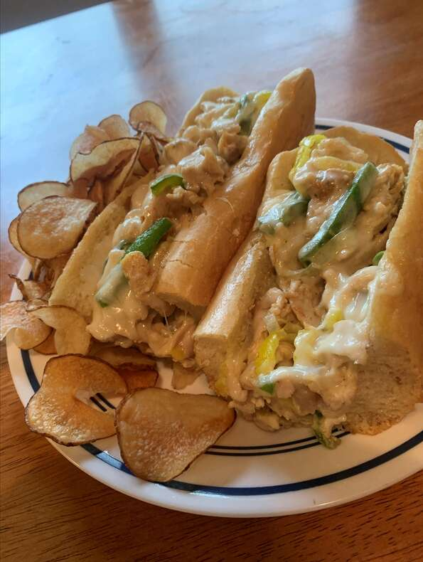

Chicken Philly Sandwich

Description
Tender, seasoned chicken breast loaded with veggies and gooey cheese on a toasted bun.
Ingredients
- 2 (4 ounce) skinless, boneless chicken breasts, partially frozen
- 1½ tablespoons Cajun seasoning
- 3 tablespoons clarified butter
- ½ medium onion, sliced
- ½ medium green bell pepper, sliced
- 1 cup sliced white mushrooms
1½ cups shredded pepper Jack cheese
- ½ cup chopped banana peppers
- 2 tablespoons mayonnaise, or to taste
- 2 (6 inch) submarine rolls, split
- Cut each chicken breast into thin, almost deli-style slices with a meat slicer or very sharp knife. Toss with Cajun seasoning and let rest to absorb the seasoning and thaw, 1 to 2 hours.
- Preheat the oven to 350 degrees F (175 degrees C). Line a baking sheet with foil.
- Melt clarified butter in a skillet over medium heat. Add onion and green pepper; saute for 2 to 3 minutes. Add chicken and mushrooms. Use a fork or spatula to break apart the chicken as it cooks-you want that authentic shredded/pulled texture. Cook until chicken is very nearly done, about 8 minutes.
- Add pepper Jack cheese and banana peppers. Toss and stir until cheese is well incorporated, melted, and gooey.
- Spread mayonnaise on the insides of the rolls, then load them up with the meat-cheese mixture and transfer to the prepared baking sheet.
- Toast in the preheated oven until cheese is slightly brown and rolls are crisp and toasted, about 3 minutes. Serve immediately
Return to main page